Visual thumbnails & posters
Every track becomes one card: a main representation, a title bar (track,
album, duration, key · bpm when a features.json exists), and a waveform
strip. Seventeen styles, chosen with --style; albums additionally get
contact sheets. All examples below are rendered from a small synthetic
demo collection (arpeggios, drones, strummed chords).
musiscape thumbnails <folder> --style combo
Spectrogram family
mel(default)—timbre and texturechroma—harmony over timetempo—rhythmic periodicitycombo—all three stacked
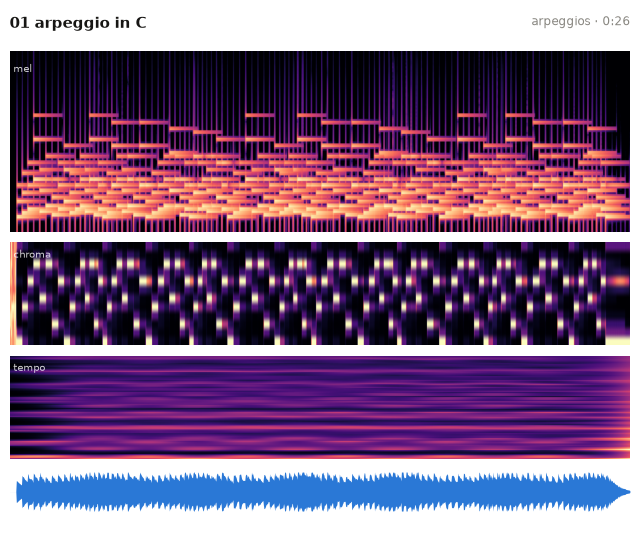
Colour codes
barcode—each moment's hue is its position on the circle of fifths, its saturation is the tonal focus, and its brightness is the loudnesswave—the Freesound-style amplitude envelope, coloured by spectral centroid (dark blue = dark timbre, red = bright)
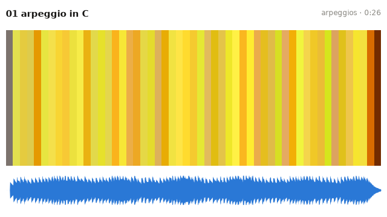
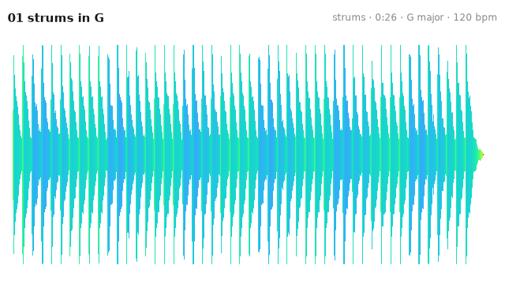
Structure
ssm—a self-similarity matrix, so that musical form reads as texturetrajectory—the piece as a smoothed path through its own timbre space (a PCA of the MFCC frames), coloured from start to end, so a piece that keeps returning to one sound draws a knot and a piece that travels draws a linekeyscape—a Sapp-style triangle, with every window at every time scale coloured by its key (hue = tonic on the fifths circle, light = major, dark = minor)arcs—Shape-of-Song repetition arcs
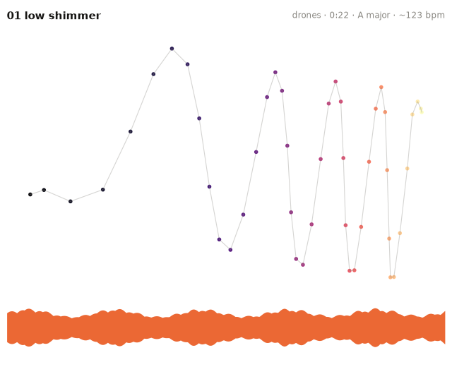
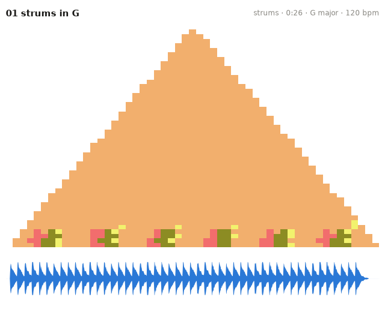
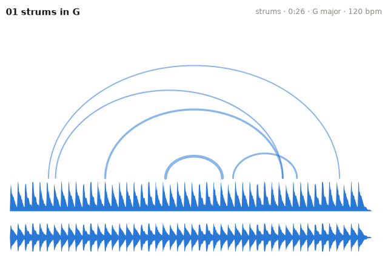
Circular forms
vinyl—the track as a tonality disc (one revolution, harmony as hue, loudness as radius) with the Freesound waveform underneathspiral—time-integrated energy on the Shepard helix (angle = pitch class, radius = octave), the only view that shows registertonnetz—the harmony's path on the circle-of-fifths plane
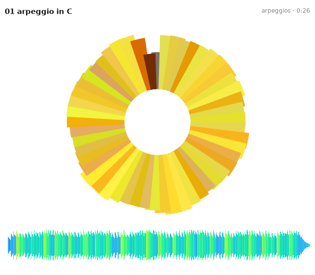
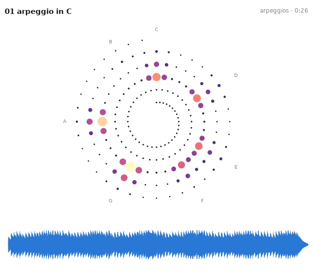
Rhythm
rhythm draws a Poincaré portrait of successive inter-onset intervals,
where metric playing collapses to points and rubato spreads into clouds. A
beat-wheel inset adds the onset phases on the dominant-period circle and the
pulse-clarity resultant arrow:
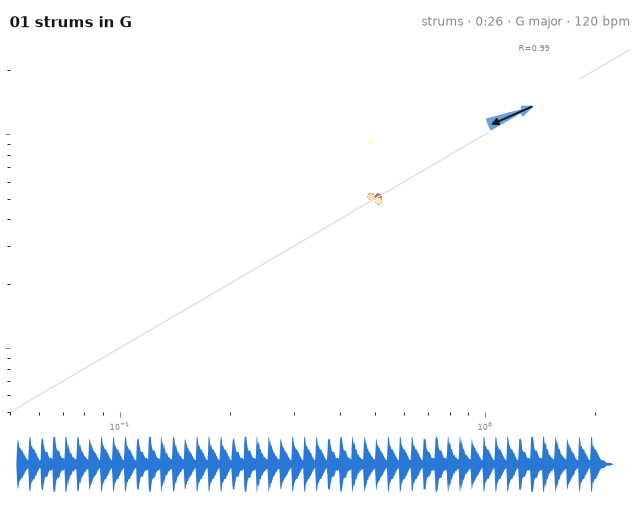
Stereo field
stereo shows where the music sits in the stereo image: a pan-by-frequency
spectrogram (blue = left, red = right, ink strength = energy) with a
goniometer inset, over a smoothed width-and-correlation timeline. Mono
recordings degrade gracefully. For multichannel and ambisonic material,
use ambiscape's spatial analysis.
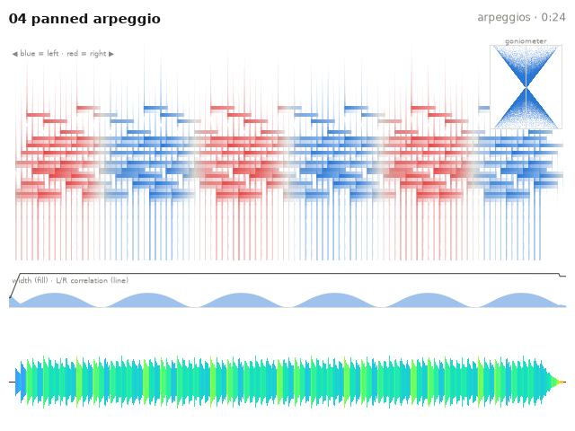
Schaeffer cards
See Schaeffer cards for the schaeffer (TARTYP) and
tarsom styles.
Posters
musiscape poster <folder> # stacked harmony barcodes
musiscape poster <folder> --style vinyl # grid of tonality discs
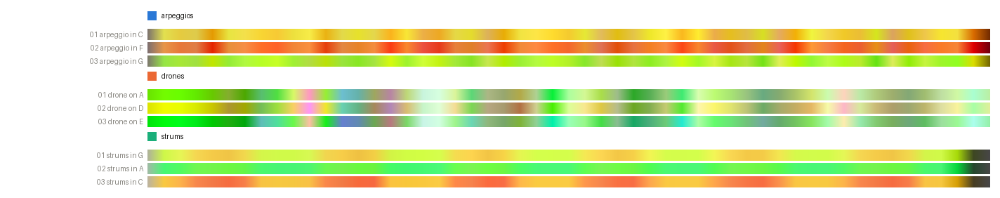
Albums read as colour families: a harmonically coherent album shares hues, a wandering one does not, and weakly tonal material (drones) washes out to low saturation.
Sonic thumbnails
Not everything worth summarising is visual. musiscape sonic <folder>
renders a ~12-second audio summary per track: a montage of the most
representative passage (the window whose features sit closest to the whole
track), the climax, and the most contrasting energetic section, in
chronological order with crossfades. Each album also gets one concatenated
medley file for fast browsing by ear. Selection is deterministic and
explainable; no learned model decides what matters.